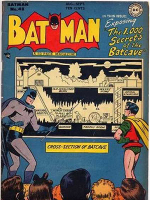
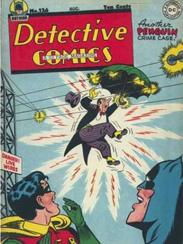
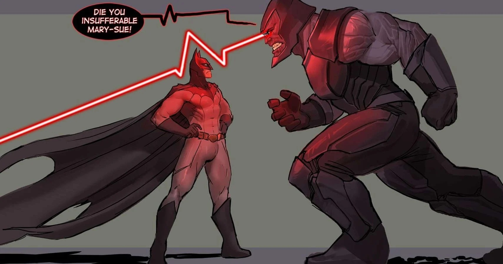

O heroi mais esperto.
Batman é o justiceiro da cidade!
O brabo dos morcegos
Financiamento da Batcaverna 22/05/1948
Durante a apresentação da planta da Batcaverna para os engenheiros, o Batman foi questionado sobre o porque as unicas entradas para pedestres era solonemente pela residência dos Wayne, e após ser acusado de ser o Bruce Wayne, o Batman joga uma bomba de fumaça no chão e desaparece deixando uma maleta cheia de dinheiro para os engenheiros fazerem o projeto.
Criminosos Xingam bonecos de neve 13/12/1937
Dois ex-criminosos são encontrados com fraturas em pelo menos 80% dos ossos e lesões graves por todo o corpo na praça municipal de gotham proximos a bonecos de neve que se pareciam com o Batman e o Robin, segundo o que foi possivel entender dos criminos eles estavam jogando bolas de neve nos bonecos e os xingado como se fossem realmente o Batman, foi aí que o verdadeiro Batman apareceu.

Batmovel sem Bateria 02/08/1940
Batman e Robin foram avistados caçando criminosos nas periferias de gotham sem o Batmovel devido a um problema na Bateria, por isso Batman decidiu que seria melhor usar bicicletas até que a Bateria seja trocada, a nossa equipe de imprensa procura entrevistar o Batman já que ainda não sabemos o que é uma "eria". Morador local diz que pode ser o que permite que o Batmovel ligue as lanternas.

Fuga Chocante 08/06/1941
Enquanto o Penguim fugia do Batman após perder todos seus capangas, ele tenta saltar de predio com seu guarda chuva aberto e acaba funcionando por um tempo, até que por uma rajada de vento ele é levado até uma linha eletrica e é radicalmente eletrocutado, as autoridades dizem que ele ira sobreviver devido as propriedades insulantes de sua barriga.
Batman cria orfanato 12/09/1945
Após a morte do 22° Robin, Batman decide facilitar o processo de recrutamento, sua solução foi fundar o orfanato Wayne que abriga apenas garotos dos quais os pais morreram, o orfanato não aceita orfãos de abandono por "não terem o senso de vingança inato" que Batman busca em seus ajudantes. Cuidadora do Orfanato questiona o porque não o robin não pode ser mulher

Robin Mulher? 15/10/1986
Após anos de pressão social do publico, Batman finalmente decide ter uma Robin mulher, a escolhida para o cargo foi a joven Carrie Kelley, a emprensa desejava entrevista-la, mas antes que isso foi possivel Darkseid se teletransportou se para a terra, vaporizou Carrey e sumiu novamente deixando apenas um bilhete escrito: "Vocês realmente querem causar o colapso do universo por causa do gênero do Robin?". Essa mensagem causou grande repercusão no publico fazendo com que comunidades feministas criasem um abaixo assinado para que Darkseid fosse julgado pelo seu feminicidio.
Batman quebra contrato 05/02/1993
Depois de um curto periodo de tempo atuando em sua serie animada, Batman decide se afastar para "combater" o "crime" em Gotham, produtores da série dizem que isso é apenas uma desculpa para que ele possa voltar para sua Batcaverna e dormir. Caso o Batman pare de atuar na serie, ocorrera uma quebra de contrato que ira aplicar uma multa altissima para Batman, infelizmente não se sabe a situação financeira do homen morcego para causar medo nele com o valor.

Batman ri 17/03/2008
Após anos de combate solo ao crime, Batman decide criar a liga da justiça, um de seus membros, Superman, conta uma piada ao Batman e o faz soltar um "arzinho" pelo nariz, a piada ainda não foi confirmada mas nerdolas ao redor do mundo inteiro entram em panico ao pensar que o vilão interdimensonal "Batman que Ri" reapareceu nessa dimensão.